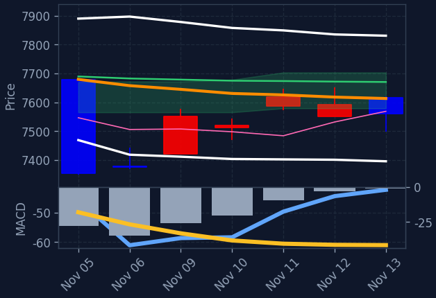
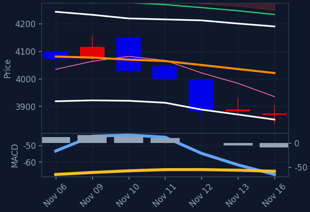
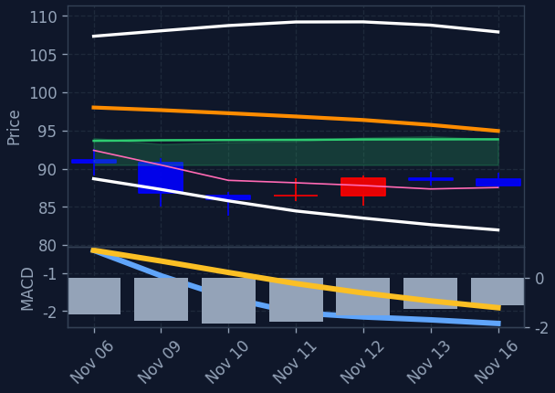
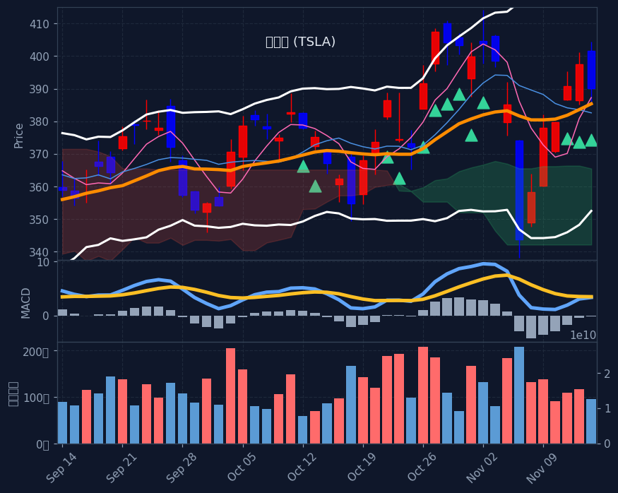
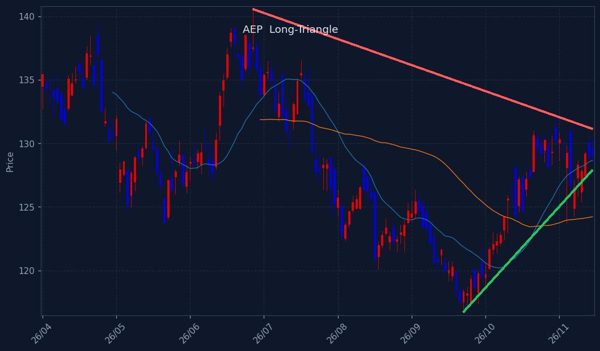
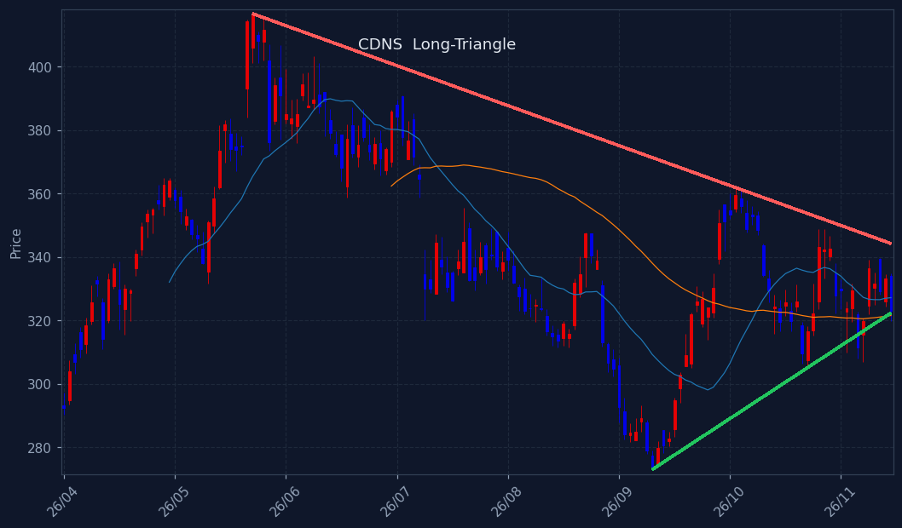
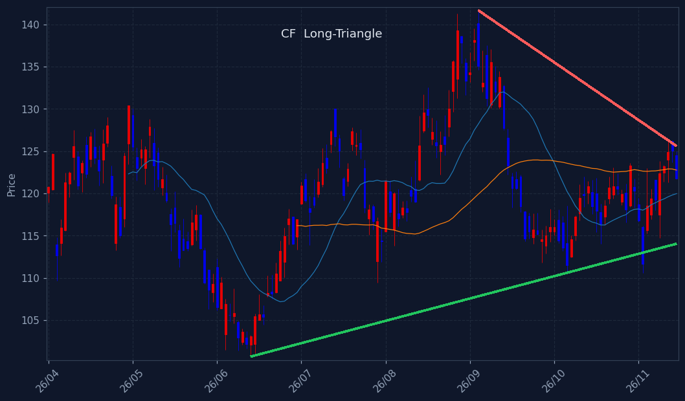
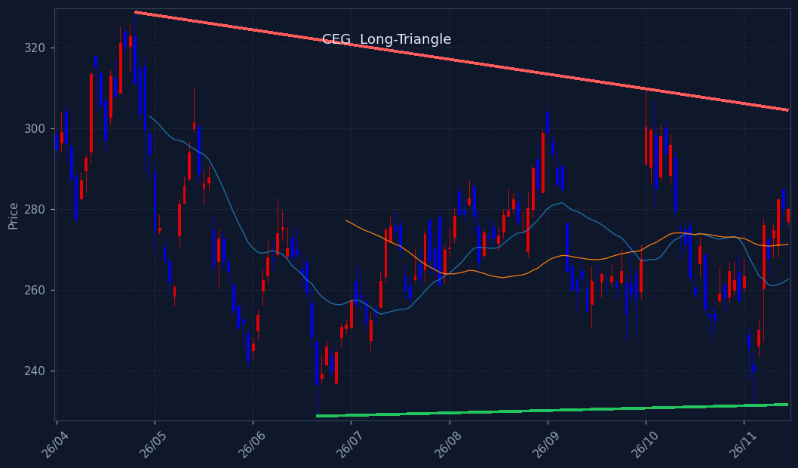
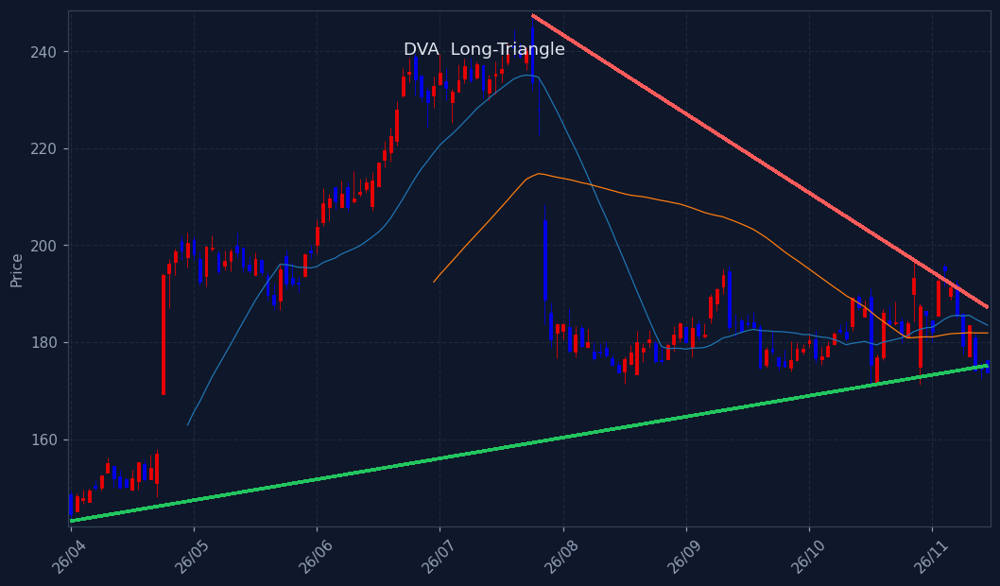

📊 미국장 장전(프리장) 리포트
39 / 100 — 공포
🌎미국 증시 마감




현재 프리장 시장은 엔비디아 실적 발표를 앞둔 경계감과 금리 우려가 부각되며 나스닥 선물(-0.63%)과 S&P500 선물(-0.29%) 중심으로 약세를 보이고 있습니다. 반도체(-3.88%)와 IT 섹터의 급락이 지수를 끌어내리는 반면, 헬스케어(+0.95%)와 금융(+0.12%) 등 방어적 섹터는 강세를 나타내고 있습니다. 이번 주 AI 관련 핵심 이벤트를 앞두고 투자자들의 관망세와 차익 실현 움직임이 짙어진 상황입니다.
이번 주 예정된 엔비디아 실적 발표 등 AI 분수령을 앞두고 주요 뉴욕증시 선물 지수가 하락세를 타고 있습니다. 여기에 도이치방크가 금리 리스크를 시장이 과소평가하고 있다고 경고하면서 위험 자산에 대한 투자 심리가 위축되었습니다. 이에 따라 AMD(-5.37%), 브로드컴(-3.44%), 엔비디아(-2.81%) 등 주요 반도체 종목들이 약세를 주도하고 있으며 레버리지 상품인 SOXL도 -11.91% 하락 중입니다. 다만 넷플릭스(+0.84%)와 애플(+0.44%)은 프리장에서 소폭 상승하며 방어력을 보여주고 있습니다.
프리장에서는 필라델피아반도체 지수(-3.43%)의 하락 여파로 반도체(-3.88%) 및 기술/IT(-2.01%) 섹터의 조정이 두드러지고 있습니다. 반면 헬스케어/바이오(+0.95%) 및 금융(+0.12%) 섹터는 매수세가 유입되며 방어적인 흐름을 형성하고 있으나, 태양광/신재생(-1.97%)과 방산/우주항공(-1.03%)은 약세를 면치 못하고 있습니다. 바클레이스 등 주요 기관의 장기적인 지수 긍정론에도 불구하고 단기적으로는 금리와 실적 경계감이 시장을 지배하는 모습입니다. 이러한 미 증시의 반도체 및 기술주 약세 흐름은 국내 증시의 IT·반도체 대형주에도 단기적인 부담으로 작용할 가능성이 큽니다.
🇺🇸미국 야간 (선물·M7·SOXL · 마감 등락 + 프리장/애프터 등락)
📊 나스닥 선물 -0.63%
📊 S&P500 선물 -0.29%
- 메타 META·나스닥 마감 +2.9% · 프리장 -0.8%
- 애플 AAPL·나스닥 마감 +0.4% · 프리장 +0.5%
- 마이크로소프트 MSFT·나스닥 마감 +0.2% · 프리장 +0.1%
- 아마존 AMZN·나스닥 마감 -0.3% · 프리장 -0.6%
- 알파벳 GOOGL·나스닥 마감 -1.0% · 프리장 -0.6%
- 테슬라 TSLA·나스닥 마감 -1.8% · 프리장 -1.1%
- 엔비디아 NVDA·나스닥 마감 -2.0% · 프리장 -3.1%
- 한국 ETF(EWY) EWY 마감 -1.8% · 프리장 -3.2%
- SOXL(반도체 3X) SOXL 마감 -11.0% · 프리장 -12.0%
🚀프리장 급등 TOP5 (ABCD 필터 통과 종목 중)
-
존슨앤존슨
JNJ·NYSE · 종가 $285.75 (전일 +0.79%) (프리장 +1.22%)
· 제약A/C/D 시그널 ⓘ추세 반전 (일목구름 위, 5>20, MACD+, 20>60)
-
버크셔해서웨이
BRKB · 종가 $592.94 (전일 +0.53%) (프리장 +0.60%)
· Multi-Sector HoldingsA/C 시그널 ⓘ수렴대 위로 상승전환 (수렴 4.8%) / 120선 위 (+16.0%) · MACD[0선위,상승]
-
일라이릴리
LLY·NYSE · 종가 $1,443.50 (전일 +1.14%) (프리장 +0.47%)
· 제약C 시그널 ⓘ대세 정배열 + 신고가 (-1.1%, 60선+17%) · ⚠️끝물주의(RSI다이버전스(77→70))
-
애플
AAPL·나스닥 · 종가 $356.27 (전일 +0.39%) (프리장 +0.44%)
· IT하드웨어A/C 시그널 ⓘ대세 정배열 + 신고가 (-1.3%, 60선+6%)
-
JP모건
JPM·NYSE · 종가 $346.19 (전일 +0.98%) (프리장 +0.01%)
· 은행D 시그널 ⓘ추세 반전 (일목구름 위, 5>20, MACD+, 20<60(초입))
🔥강세 섹터 (상승률 상위)
- 헬스케어/바이오 +0.95%
- 금융 +0.12%
- 경기소비재 -0.06%
- 2차전지/리튬 -0.39%
🔻약세 섹터 (하락률 상위)
- 반도체 -3.88%
- 기술/IT -2.01%
- 태양광/신재생 -1.97%
- 방산/우주항공 -1.03%
🧬관심 테마 대장 (양자·우주·AI 등)
-
로켓 컴퍼니스
RKT·NYSE
B/D ⓘ · 종가 $13.71 (전일 +0.00%) (프리장 -0.69%) 1주일 -9.0%테마: 핀테크 · 시총 51조 9,260억 · 거래대금 3,571억
💰미국장 거래대금 순위 TOP10 (S&P500)
-
1.
애플
AAPL·나스닥 · 종가 $356.27 (전일 +0.39%)
거래대금 19조 121억시총 6,909조 7,317억
-
2.
테슬라
TSLA·나스닥 · 종가 $390.22 (전일 -1.82%)
거래대금 16조 8,050억시총 2,058조 5,473억
-
3.
아마존
AMZN·나스닥 · 종가 $266.66 (전일 -0.29%)
거래대금 11조 595억시총 3,848조 2,276억
-
4.
일라이릴리
LLY·NYSE · 종가 $1,443.50 (전일 +1.14%)
거래대금 4조 102억시총 1,716조 159억
-
5.
버크셔해서웨이
BRKB · 종가 $592.94 (전일 +0.53%)
거래대금 3조 7,710억시총 1,681조 2,122억
-
6.
월마트
WMT·나스닥 · 종가 $128.09 (전일 +1.51%)
거래대금 2조 8,411억시총 1,356조 2,652억
-
7.
코스트코
COST·나스닥 · 종가 $1,106.21 (전일 +1.28%)
거래대금 2조 7,668억시총 654조 2,130억
-
8.
존슨앤존슨
JNJ·NYSE · 종가 $285.75 (전일 +0.79%)
거래대금 2조 3,957억시총 918조 565억
-
9.
코카콜라
KO·NYSE · 종가 $99.25 (전일 +1.86%)
거래대금 2조 3,872억시총 569조 8,259억
-
10.
텍사스인스트루먼트
TXN·나스닥 · 종가 $303.60 (전일 -2.84%)
거래대금 2조 1,190억시총 370조 2,456억
🏆미국 추천 Top 3



🇺🇸미국 종목 스크리닝 (전략별 칸 · A/B/C/D)
📊 A 수렴 후 상승 (3)
-
애플
AAPL·나스닥 · 종가 $356.27 (전일 +0.39%) (프리장 +0.44%)
A/C 시그널 ⓘ 20일선 +2.9%시총 6,909조 7,317억 · 거래대금 19조 121억테마: IT하드웨어🔻 한국인 순매도 최근5일 172억(자금유출)수렴대 위로 상승전환 (수렴 2.0%) / 120선 위 (+10.5%) · MACD[GC,0선위,상승]
-
테슬라
TSLA·나스닥 · 종가 $390.22 (전일 -1.82%) (프리장 -1.14%)
A 시그널 ⓘ 20일선 +1.3%시총 2,058조 5,473억 · 거래대금 16조 8,050억테마: 자동차🔻 한국인 순매도 최근5일 1,546억(자금유출)수렴대 위로 상승전환 (수렴 1.2%) / 120선 위 (+4.5%) · MACD[0선위,상승]
-
버크셔해서웨이
BRKB · 종가 $592.94 (전일 +0.53%) (프리장 +0.60%)
A/C 시그널 ⓘ 20일선 +6.1%시총 1,681조 2,122억 · 거래대금 3조 7,710억테마: Multi-Sector Holdings수렴대 위로 상승전환 (수렴 4.8%) / 120선 위 (+16.0%) · MACD[0선위,상승]
🔄 B 20일선 눌림목 (2)
-
텍사스인스트루먼트
TXN·나스닥 · 종가 $303.60 (전일 -2.84%) (프리장 -1.84%)
B 시그널 ⓘ 20일선 +2.3%시총 370조 2,456억 · 거래대금 2조 1,190억테마: 반도체급등 (10일 +17%) / 20일선 위 (+2.3%, 60선기울기 +1.4%) / 단기눌림 (5일선 -0.3%, 5일고점 -4.2%) · 고점대비 -4.3%
-
에코스타
ECHO·나스닥 · 종가 $100.00 (전일 +1.91%) (프리장 -1.50%)
B/D 시그널 ⓘ 20일선 +5.4%시총 38조 8,339억 · 거래대금 6,901억테마: 무선통신급등 (10일 +20%) / 20일선 위 (+5.4%, 60선기울기 +1.6%) / 단기눌림 (5일선 -1.1%, 5일고점 -4.8%) · 고점대비 -4.8%
📈 C 추세추종 (3)
-
애플
AAPL·나스닥 · 종가 $356.27 (전일 +0.39%) (프리장 +0.44%)
A/C 시그널 ⓘ 20일선 +2.9%시총 6,909조 7,317억 · 거래대금 19조 121억테마: IT하드웨어🔻 한국인 순매도 최근5일 172억(자금유출)대세 정배열 + 신고가 (-1.3%, 60선+6%)
-
일라이릴리
LLY·NYSE · 종가 $1,443.50 (전일 +1.14%) (프리장 +0.47%)
C 시그널 ⓘ 20일선 +6.4% ⚠️끝물ⓘ시총 1,716조 159억 · 거래대금 4조 102억테마: 제약대세 정배열 + 신고가 (-1.1%, 60선+17%) · ⚠️끝물주의(RSI다이버전스(77→70))
-
버크셔해서웨이
BRKB · 종가 $592.94 (전일 +0.53%) (프리장 +0.60%)
A/C 시그널 ⓘ 20일선 +6.1%시총 1,681조 2,122억 · 거래대금 3조 7,710억테마: Multi-Sector Holdings대세 정배열 + 신고가 (-0.7%, 60선+13%)
🔃 D 추세 반전 (3)
-
아마존
AMZN·나스닥 · 종가 $266.66 (전일 -0.29%) (프리장 -0.62%)
D 시그널 ⓘ 20일선 +3.6%시총 3,848조 2,276억 · 거래대금 11조 595억테마: 종합소매🇰🇷 한국인 순매수 전일 +556억 · 최근5일 +200억추세 반전 (일목구름 위, 5>20, MACD+, 20>60)
-
존슨앤존슨
JNJ·NYSE · 종가 $285.75 (전일 +0.79%) (프리장 +1.22%)
A/C/D 시그널 ⓘ 20일선 +5.2%시총 918조 565억 · 거래대금 2조 3,957억테마: 제약추세 반전 (일목구름 위, 5>20, MACD+, 20>60)
-
JP모건
JPM·NYSE · 종가 $346.19 (전일 +0.98%) (프리장 +0.01%)
D 시그널 ⓘ 20일선 +2.1%시총 1,226조 9,584억 · 거래대금 1조 9,400억테마: 은행추세 반전 (일목구름 위, 5>20, MACD+, 20<60(초입))
※ S&P500 대상 A/B/C/D 전략별 분류(각 칸 거래대금순). 한 종목이 여러 전략에 잡히면 각 칸에 중복 표기. 백테스트상 기계적 엣지는 약하며 매수 추천이 아닙니다. 판단·책임은 본인.
🇰🇷한국인 자금흐름 (서학개미 · 최근 5거래일 순매수/순매도, 억원)
📅 결제일 11/9~11/13(5거래일) 기준 · 오늘 11/16 기준 약 3일 전 데이터 · T+2 결제 기준(실제 매매는 약 2거래일 전)
💸 한국인 순매수 일평균: +4,883억 (전주 +8,977억 대비 -45.6%) · 5일 총액 +24,413억
💰 순매수 TOP5 — 개별종목 (11/9~11/13 결제 기준)
- 엔비디아 NVDA·나스닥 +4,267억시총 5,248조 209억 · 거래대금 79조 712억
- 특정 티커 불명 X +1,520억
- 메타 META·나스닥 +1,006억시총 2,189조 1,308억 · 거래대금 12조 9,550억
- 알파벳(구글) GOOGL·나스닥 +539억시총 4,852조 7,946억 · 거래대금 12조 1,232억
- AMD AMD·나스닥 +520억시총 1,168조 9,652억 · 거래대금 35조 409억
📦 순매수 TOP5 — ETF (11/9~11/13 결제 기준)
- 프로셰어즈 울트라프로 QQQ ETF TQQQ +3,192억거래대금 6조 2,676억
- 나스닥100 2X(QLD) QLD +2,152억거래대금 7,068억
- 나스닥100 ETF(QQQM) QQQM +1,133억거래대금 1조 3,736억
- S&P500 ETF(VOO) VOO +1,036억거래대금 5조 1,735억
- 반도체 3배 레버리지 ETF SOXL +1,027억거래대금 16조 255억
🔻 순매도 TOP3 — 자금 유출 (11/9~11/13 결제 기준)
- 테슬라 TSLA·나스닥 −1,546억시총 2,058조 5,165억 · 거래대금 16조 8,047억
- 디렉션 데일리 세미컨덕터 불 3X ETF SOXL −1,094억거래대금 16조 255억
- 셀레스티카 CLS·NYSE −644억시총 40조 4,507억 · 거래대금 1조 1,587억
※ 예탁결제원(SEIBro) 최근 5거래일 한국인 순매수/순매도 결제금액(T+2) · 11/9~11/13 결제 기준(실제 매매는 약 2거래일 전). 자금이 어디로 유입·유출되는지 참고용.
🩹E 투매 바닥 반등 (투매 capitulation + 반등 · 🔥=지수 동반 바닥)
-
칸준 ADR
BZ·나스닥 · $12.96
+3.76%
RSI 24
· 개별 바닥(지수RSI 42·공포탐욕 39, 시장 양호)투매바닥 반등 (RSI 24·50선-21%·거래량3.9x)
※ 투매 바닥(RSI≤30+50선이격+거래량폭증)에서 반등 시작 포착, 4시간봉 RSI도 과매도. 🔥는 지수(나스닥/S&P·코스피)도 RSI<35 동반 바닥(강신호). 떨어지는 칼날 위험 — 매수 추천 아님, 판단·책임 본인.
📐F. 60일선 지지 (60일선까지 눌렸다 지지 마감 · 참고용)
-
글로벌 페이먼츠
GPN·NYSE · $91.90
+4.21%
60일선 지지 (저가 +0.0%·종가 +4.4%·꼬리지지 86%)
-
브루커
BRKR·나스닥 · $61.59
+2.09%
60일선 지지 (저가 -0.2%·종가 +4.0%·꼬리지지 88%)
-
필립모리스 인터내셔널
PM·NYSE · $198.96
+1.17%
60일선 지지 (저가 +0.6%·종가 +1.9%·꼬리지지 86%)
-
D.R. 호튼
DHI·NYSE · $145.55
+0.76%
60일선 지지 (저가 +0.4%·종가 +2.2%·꼬리지지 97%)
-
머크
MRK·NYSE · $147.76
+0.55%
60일선 지지 (저가 -1.2%·종가 +0.5%·꼬리지지 92%)
-
프린시펄 파이낸셜 그룹
PFG·나스닥 · $113.55
+0.51%
60일선 지지 (저가 -0.2%·종가 +1.0%·꼬리지지 85%)
-
엑슨모빌
XOM·NYSE · $170.59
+0.48%
60일선 지지 (저가 +0.7%·종가 +1.5%·꼬리지지 55%)
-
타겟
TGT·NYSE · $161.45
+0.34%
60일선 지지 (저가 +1.0%·종가 +2.4%·꼬리지지 83%)
-
솔벤텀
SOLV·NYSE · $89.08
+0.30%
60일선 지지 (저가 -0.3%·종가 +1.1%·꼬리지지 61%)
-
화이자
PFE·NYSE · $28.89
+0.21%
60일선 지지 (저가 -0.4%·종가 +0.6%·꼬리지지 73%)
※ 60일선까지 눌렸다 지지받고 마감한 종목(참고 태그). 백테스트상 다음날 반등 엣지 없음(승률 48~49%·생존편향 포함) 확인됨 — 매수 추천·시그널 아님, 종합점수/Top3에도 미반영. 단순 참고용.
🧬삼각수렴 임박 (변동성 수축·돌파 직전 코일 · 참고용)






※ 삼각수렴 돌파 임박 종목. 📐장기 삼각수렴(수개월 대형 삼각형, 볼록껍질 추세선+실수축) = 백테스트 491건 승률 66%·평균 +8.7%/20일로 엣지 확인(HOOD·TSLA류 대박 초입). 단기 코일 = 엣지 약함(승률 ~60% 베타 수준). 🔻대칭=고점↓·저점↑ / 🟰바닥지지=저점 평평. 매수추천 아님·종합점수/Top3 미반영(관찰용).